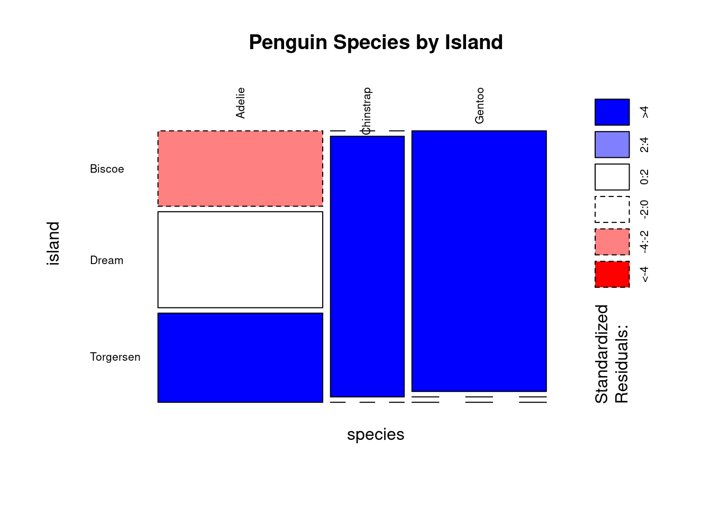
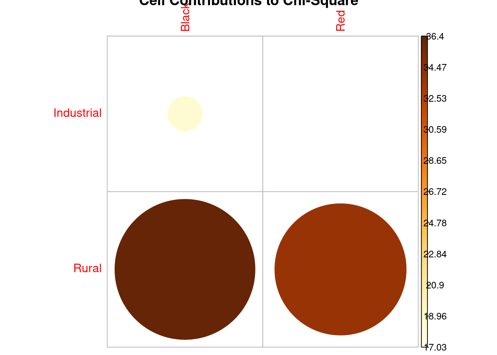

Analysing Categorical Data - Frequency Tests and Contingency Tables
RMDA ARES40011
Author
Felipe Melo
Published
May 22, 2025
Part 1 - Research Methods
Part 2 - Data Analyses
Introduction to Categorical Data Analysis
When working with data, we often encounter variables that represent categories rather than numerical quantities. These are known as categorical variables [1, 2]. Examples might include eye colour (blue, brown, green), habitat type (rural, industrial), or survival status (yes, no) [1, 3, 4]. Understanding the frequency distribution of a single categorical variable is straightforward, but researchers are frequently interested in the relationship or association between two or more categorical variables [1, 5].
For example, we might want to know if there is a relationship between eye colour and sex in a group of students, or whether the frequency of different ladybird colour forms varies between different habitats [1, 3]. To explore these relationships and test for associations, we use tools like contingency tables and the Chi-Square contingency table test [1, 2, 5, 6].
Contingency Tables
A contingency table is a fundamental tool for summarising the frequency distribution of two or more categorical variables simultaneously [2, 5]. It organises the data into a grid where each cell shows the count of observations that fall into a specific combination of categories from the variables [5].
A table summarising the frequencies of two categorical variables is called a two-way contingency table [5]. If more than two variables were involved, it would be a higher-dimensional table (e.g., a three-way contingency table for three variables) [5].
The term “contingency” refers to the table’s ability to capture how the frequencies of one variable are ‘contingent’ upon, or associated with, the categories of another variable [5]. This association, linkage, non-independence, or interaction is evident when the proportions of observations in one set of categories depend on a second set of categories [5, 7].
Consider two possibilities for a two-way table with categories R1, R2 and C1, C2:
C1
C2
R1
10
20
R2
40
80
C1
C2
R1
10
80
R2
40
20
In the first table (left), there is no association. The proportion of R1 cases relative to R2 cases is the same for both C1 and C2 (10/40 = 20/80 = 1/4). The total numbers in each category are irrelevant; it’s the proportions that indicate association [7].
In the second table (right), there is evidence of an association. The proportion of R1 cases relative to R2 cases changes markedly between C1 (10/40 = 1/4) and C2 (80/20 = 4) [6]. The R1 cases are less frequent in the C1 column compared to the C2 column, relative to R2 [6]. Again, the proportions, not the raw numbers, reveal the association [6].
Creating Contingency Tables in R
The sources discuss several ways to create contingency tables in R, depending on how the raw data is structured [8-21].
The primary function for creating contingency tables from raw data is table() or xtabs() [8, 11, 19]. The xtabs() function is particularly useful as it can handle different data formats and is required for the chisq.test() function [8, 9].
Case 1: One Observation per Row
When your data has one row for each individual observation and columns for each categorical variable, you can use xtabs() with a formula [9, 11].
Let’s use the penguins dataset as an example. Suppose we want a contingency table of species and island.
# Load the penguins data (assuming it's available, e.g., from the palmerpenguins package)# install.packages("palmerpenguins")library(palmerpenguins)
Anexando pacote: 'palmerpenguins'
Os seguintes objetos são mascarados por 'package:datasets':
penguins, penguins_raw
── Conflicts ────────────────────────────────────────── tidyverse_conflicts() ──
✖ dplyr::filter() masks stats::filter()
✖ dplyr::lag() masks stats::lag()
ℹ Use the conflicted package (<http://conflicted.r-lib.org/>) to force all conflicts to become errors
# Remove rows with missing values for species or islandpenguins_complete <-na.omit(penguins[, c("species", "island")])# Create the contingency table using xtabsspecies_island_table <-xtabs(~ species + island, data = penguins_complete)species_island_table
island
species Biscoe Dream Torgersen
Adelie 44 56 52
Chinstrap 0 68 0
Gentoo 124 0 0
Here, xtabs() counts the number of occurrences for each combination of species and island. Alternatively, the table() function can be used, which is often simpler for this data structure.
Notice that table() requires you to specify the columns using the $ operator, while xtabs() uses a formula.
Case 2: Partially Summarised Data (Counts per Site/Group) Sometimes data is partially summarised, for example, counts within different sub-locations. In this case, you’ll have a column containing the counts and columns identifying the categories. You use xtabs() with the count variable on the left side of the formula ~.
Let’s simulate a similar structure using mtcars, grouping by cylinder (cyl) and transmission type (am), and having a ‘mpg’ variable. This isn’t a natural fit for mtcars, but we can illustrate the concept.
# Simulate partially summarised data from mtcars (e.g., counts per car type group)# This is for illustration of the data format, not a real mtcars use casemtcars_summary <-aggregate(mpg ~ cyl + am, data = mtcars, FUN = length)# Use xtabs with the count variable on the leftcyl_am_table_summary <-xtabs(mpg ~ cyl + am, data = mtcars_summary)cyl_am_table_summary
am
cyl 0 1
4 3 8
6 4 3
8 12 2
In this structure, xtabs(mpg ~ cyl + am, …) tells R to sum the mpg variable for each combination of cyl and am.
Case 3: Fully Summarised Data If your data is already in a summarised format, with each row representing a unique combination of categories and a column for the total count for that combination,xtabs() can still be used. The syntax is the same as Case 2, with the count variable on the left side of ~. xtabs will essentially ‘sum’ over the single count for each combination, effectively converting the data frame format into an xtabs contingency table object, which is needed for chisq.test(). Let’s use the ladybird example table:
# Manual creation of the ladybird table as a data frame (similar to LADYBIRDS3.CSV)ladybird_df_summarised <-data.frame(Habitat =c("Industrial", "Industrial", "Rural", "Rural"),Colour =c("Black", "Red", "Black", "Red"),Number =c(115, 85, 30, 70))ladybird_df_summarised
Habitat Colour Number
1 Industrial Black 115
2 Industrial Red 85
3 Rural Black 30
4 Rural Red 70
# Use xtabs to convert to a contingency table objectladybird_table_xtabs <-xtabs(Number ~ Habitat + Colour, data = ladybird_df_summarised)ladybird_table_xtabs
Colour
Habitat Black Red
Industrial 115 85
Rural 30 70
This produces the desired contingency table object. ## Visualizing Contingency Tables Visualising contingency tables can provide quick insights into potential associations. Mosaic plots are particularly useful as they represent combinations of categories by rectangles whose size is proportional to the count, and can use colour to indicate deviation from expected counts under independence. Using the penguins species by island table:
library(graphics) # mosaicplot is in the built-in graphics package# Plot the tablemosaicplot(species_island_table, shade =TRUE, las=2, main ="Penguin Species by Island")

In a mosaic plot with shade = TRUE, blue colours indicate that the observed cell count is higher than expected under independence, while red indicates it is lower than expected. This helps identify which specific category combinations contribute most to any detected association. For example, the plot shows a strong positive association (blue) between Adelie penguins and Biscoe island, and Gentoo penguins and Torgersen island.
Chi-Square Contingency Table Test
The Pearson’s Chi-Square ((^2)) contingency table test is the most widely used method to evaluate whether there is a significant association between two or more categorical variables summarised in a contingency table.
How the Test Works? The core idea of the Chi-Square test is to compare the observed frequencies in the contingency table (the actual counts from the data) to the expected frequencies that would be observed if the variables were truly independent (i.e., if there was no association).
The test addresses the question of dependence between different kinds of outcomes or events by setting up a null hypothesis.
• Null Hypothesis ((H_0)): The row and column variables (the two categorical variables) are independent of one another. The occurrence of one event does not depend on the other. • Alternative Hypothesis ((H_1)): The row and column variables are dependent; there is a significant association between the categories.
Step 1: Calculate Expected Frequencies Under the null hypothesis of independence, the expected number of observations in each cell of the table is calculated. The logic is based on probability: if two events are independent, the probability of both occurring is the product of their individual probabilities. For any cell in the table, the expected value is calculated as: \[ E = \frac{(\text{Row Total}) \times (\text{Column Total})}{\text{Grand Total}} \] Let’s calculate the expected values for the ladybird colour by habitat
Compare these to the observed counts (30, 70, 115, 85). There are differences, but are they large enough to be statistically significant?
Step 2: Calculate the Chi-Square Test Statistic The Chi-Square test statistic chi^2 quantifies the overall discrepancy between the observed counts ((o)) and the expected counts ((e)) across all cells in the table. The formula is: \[ \chi^2 = \sum{\frac{(o - e)^2}{e}} \] The sum is taken over all cells in the contingency table. A larger chi² value indicates a greater mismatch between observed and expected counts, suggesting stronger evidence against the null hypothesis of independence.
For a 2x2 table, there is a shortcut formula, but it doesn’t show the expected values: \[ \chi^{2}=\frac{k(bc-ad)^{2}}{efgh} \] where k is the grand total, a, b, c, d are the cell counts, and e, f, g, h are the row and column totals.
Step 3: Determine the p-value The calculated chi^2 statistic is compared to a theoretical Chi-Square distribution to determine the p-value. The p-value is the probability of observing a chi^2 statistic as large as, or larger than, the one calculated from the data, assuming the null hypothesis of no association is true.
• A low p-value (typically less than a chosen significance level like 0.05) indicates that the observed pattern is unlikely under the null hypothesis, providing evidence against the null hypothesis and suggesting a significant association. • A high p-value suggests the observed pattern is reasonably likely under the null hypothesis, meaning we fail to reject the null hypothesis; there is insufficient evidence to conclude a significant association.
The Chi-Square distribution used depends on the degrees of freedom (df), which for a two-way contingency table is calculated as ((r-1) (c-1)), where (r) is the number of rows and (c) is the number of columns. For a 2x2 table, df = (2-1) * (2-1) = 1.
Assumptions of the Chi-Square Test
Like most statistical tests, the Chi-Square contingency test has assumptions. 1. Independent Observations: The counts in each cell must be independent. This means each observation should only contribute to one cell in the table, and the observations should not be related (e.g., repeated measurements on the same individuals are not independent). 2. Sufficiently Large Expected Counts: The expected counts (not the observed counts) should not be too low. A common rule of thumb is that all expected values should be greater than 5. If this assumption is violated, the p-values generated by the test can become unreliable. In such cases, Fisher’s exact test is a more appropriate alternative.
Performing the Chi-Square Test in R
The chisq.test() function in R performs the Chi-Square contingency table test. Its primary input is a contingency table object (like those created by xtabs() or table()). Let’s perform the test on the ladybird data:
# ladybird_table_xtabs was created earlier using xtabschisq.test(ladybird_table_xtabs)
Pearson's Chi-squared test with Yates' continuity correction
data: ladybird_table_xtabs
X-squared = 19.103, df = 1, p-value = 1.239e-05
The output provides the test reminder, data used, the calculated (^2) statistic (X-squared), the degrees of freedom (df), and the p-value.
Notice the output mentions “Yates’ continuity correction”. This correction is applied by default in R for 2x2 tables to provide more reliable p-values under certain circumstances. You can turn it off using correct = FALSE, but the default is generally safer for 2x2 tables.
# Performing the test without Yates' correction (not recommended for 2x2)chisq.test(ladybird_table_xtabs, correct =FALSE)
The results are similar but slightly different. Stick with the default correct = TRUE for 2x2 tables. Interpreting the Output and Nature of Association The p-value from the chisq.test() tells you whether there is a statistically significant association between the variables. A p-value less than your chosen significance level (e.g., 0.05) leads you to reject the null hypothesis and conclude that there is a significant association.
For the ladybird example, the p-value was very small (1.239e-05 with correction), which is much less than 0.05. We reject the null hypothesis and conclude there is a significant association between ladybird colour type and habitat. Merely stating that an association exists isn’t always sufficient. We should also describe the nature of the association. For 2x2 tables, this is relatively easy: black individuals are more likely to be found in industrial areas in the ladybird example. For larger tables, interpreting the association is harder. Visualisations (like mosaic plots) and examining the differences between observed and expected counts can help.
A more formal way to investigate the nature of the association, especially for larger tables, is by examining the residuals for each cell. Pearson residuals (or standardized residuals) are calculated as: \[ r = \frac{o - e}{\sqrt{e}} \] Cells with large absolute residuals contribute most to the overall (^2) statistic. The sign of the residual indicates the direction of the association:
• Positive residuals (often shown in blue in plots like corrplot) indicate an attraction or positive association between the corresponding row and column categories – the observed count is higher than expected. • Negative residuals (often shown in red) indicate a repulsion or negative association – the observed count is lower than expected. You can access the observed counts, expected counts, and residuals from the output of the chisq.test() function using the $ operator.
Colour
Habitat Black Red
Industrial 1.865 -1.804
Rural -2.637 2.551
Looking at the residuals, the positive residuals for (Industrial, Black) and (Rural, Red) indicate these combinations occur more often than expected under independence, while (Rural, Black) and (Industrial, Red) occur less often than expected. This confirms the conclusion that black forms are more frequent in industrial areas relative to red forms, compared to rural areas. The contribution of each cell to the total (^2) score can also be calculated ( (r^2 / ^2) ) to see which cells drive the significant result.
# Calculate cell contributions in percentagecell_contributions <-100* ladybird_test_result$residuals^2/ ladybird_test_result$statisticround(cell_contributions, 3)
Colour
Habitat Black Red
Industrial 18.201 17.027
Rural 36.403 34.054
corrplot(cell_contributions, is.cor =FALSE, main ="Cell Contributions to Chi-Square")

The plot shows that the Industrial/Black and Rural/Red cells contribute the most to the significant Chi-Square result. Accessing Test Results The result of chisq.test() is a list containing several components. You can access these using the $ operator: • statistic: The (^2) test statistic value. • parameter: The degrees of freedom. • p.value: The p-value of the test. • observed: The observed contingency table. • expected: The expected contingency table under (H_0). • residuals: The Pearson residuals for each cell.
Fisher’s Exact Test
When the assumption of sufficiently large expected counts for the Chi-Square test is not met (e.g., expected counts less than 5), Fisher’s exact test is a more reliable alternative. It calculates the exact probability of observing the given table (or a more extreme one) assuming independence, without relying on approximations.
Fisher’s exact test is performed using the fisher.test() function in R. It also takes a contingency table as input. Let’s use the Titanic data example from the sources.
# Manually create the Titanic sex vs survival tabletitanic_table <-as.table(matrix(c(156, 307, 708, 142), nrow =2, byrow =TRUE))colnames(titanic_table) <-c("no", "yes")rownames(titanic_table) <-c("female", "male")titanic_table
no yes
female 156 307
male 708 142
# Check expected counts for Chi-Square assumptionchisq.test(titanic_table)$expected
no yes
female 304.6702 158.3298
male 559.3298 290.6702
# Expected counts are > 5 here, so Chi-Square is appropriate, but Fisher's is also fine and often preferred computationally.# Perform Fisher's exact testfisher.test(titanic_table)
Fisher's Exact Test for Count Data
data: titanic_table
p-value < 2.2e-16
alternative hypothesis: true odds ratio is not equal to 1
95 percent confidence interval:
0.07759301 0.13384845
sample estimates:
odds ratio
0.1021212
# Manually create the Titanic sex vs survival tabletitanic_table <-as.table(matrix(c(156, 307, 708, 142), nrow =2, byrow =TRUE))colnames(titanic_table) <-c("no", "yes")rownames(titanic_table) <-c("female", "male")titanic_table
no yes
female 156 307
male 708 142
# Check expected counts for Chi-Square assumptionchisq.test(titanic_table)$expected
no yes
female 304.6702 158.3298
male 559.3298 290.6702
# Expected counts are > 5 here, so Chi-Square is appropriate, but Fisher's is also fine and often preferred computationally.# Perform Fisher's exact testfisher.test(titanic_table)
Fisher's Exact Test for Count Data
data: titanic_table
p-value < 2.2e-16
alternative hypothesis: true odds ratio is not equal to 1
95 percent confidence interval:
0.07759301 0.13384845
sample estimates:
odds ratio
0.1021212
The output includes the p-value. It also conveniently provides an estimate of the odds ratio and its 95% confidence interval. The odds ratio is another way to quantify the strength and direction of the association.
For the Titanic data, the odds ratio is about 0.10, indicating the odds of a male surviving were about one-tenth the odds of a female surviving. The confidence interval gives a range of plausible values for this odds ratio in the population. Fisher’s exact test is particularly recommended for 2x2 tables with small expected counts, but the fisher.test() function in R can handle larger tables as well, although it won’t calculate odds ratios for tables larger than 2x2. ## Exercises Apply what you’ve learned to explore associations in different datasets.
Exercise 1: Car Characteristics
The mtcars dataset contains various characteristics for different car models. We can treat some of these as categorical variables. Let’s investigate the relationship between the number of cylinders (cyl) and the transmission type (am, where 0 = automatic, 1 = manual). 1. Load the mtcars dataset. 2. Create a contingency table showing the frequencies of cyl by am. 3. Examine the expected counts for a Chi-Square test. Are the assumptions met (all expected values > 5)? 4. Perform the appropriate hypothesis test (Chi-Square if assumptions met, otherwise Fisher’s exact test) to determine if there is a significant association between the number of cylinders and transmission type. 5. Interpret the results of the test, including the p-value and conclusion regarding the null hypothesis. 6. Based on the observed counts or residuals/contributions, describe the nature of any significant association found. For example, are cars with more cylinders more likely to have automatic or manual transmission?
Exercise 2: Penguin Species and Sex
The penguins dataset contains data on penguins from different islands.
Load the penguins dataset and ensure you handle any missing values in the species and sex columns.
Create a contingency table showing the frequencies of species by sex.
Create a mosaic plot of the contingency table, using shading (shade=TRUE) to visualise deviations from independence.
Examine the expected counts for a Chi-Square test. Are the assumptions met?
Perform the appropriate hypothesis test to determine if there is a significant association between penguin species and sex.
Interpret the test results. If there is a significant association, use the mosaic plot or residuals to describe how the distribution of sexes differs among the species.
Refereces for this class
Chapter 32 Contingency tables | APS 240: Data Analysis and Statistics with R